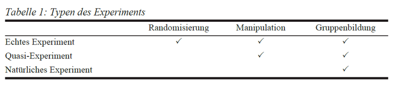
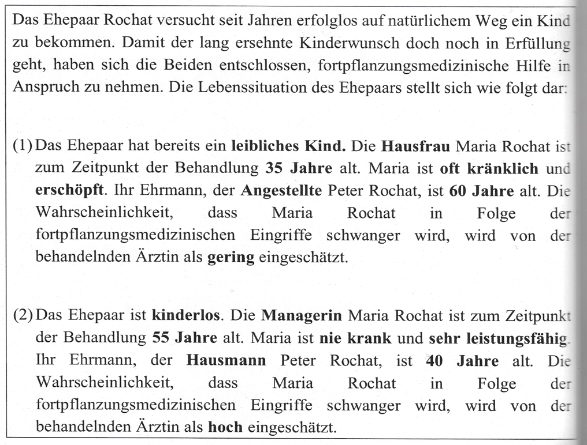
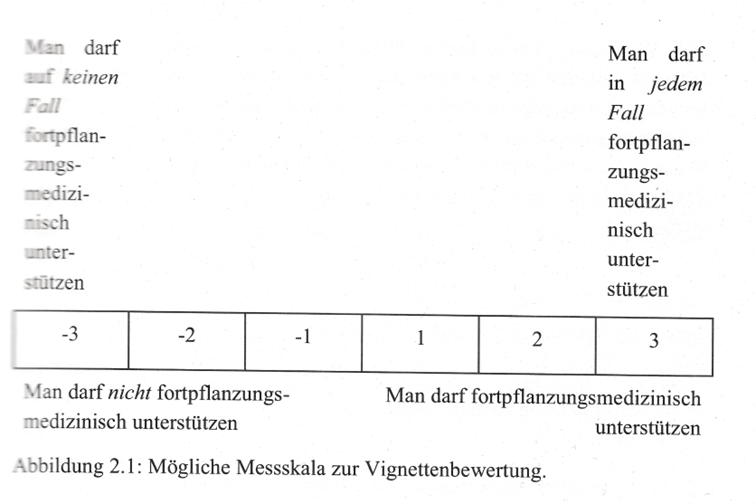
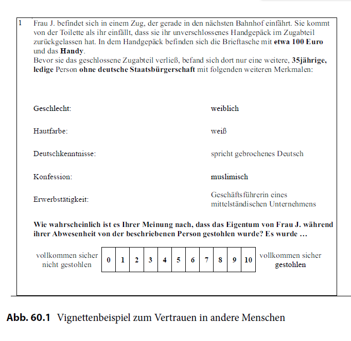
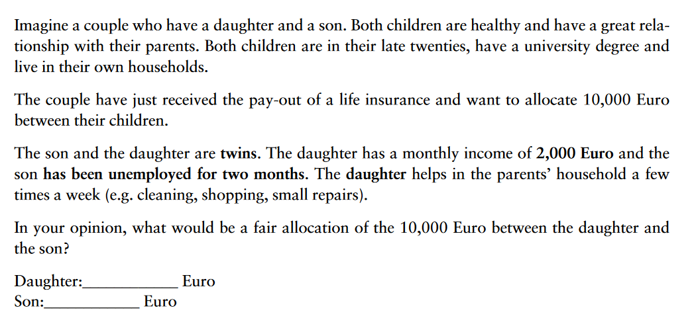
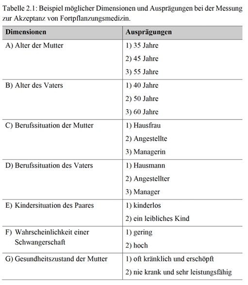
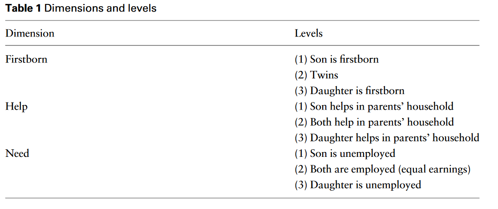

pos variable label col_type missing values
1 id_resp ID of respondent dbl 0
2 id_within ID for each observ~ dbl 0
3 id_vignette ID of vignette dbl 0
4 deck Vignette deck dbl 0
5 reihevig Order of vignette dbl 0
6 firstborn Vignette: firstbor~ dbl+lbl 0 [1] Son firstborn
[2] Twins
[3] Daughter first~
7 need Vignette: income dbl+lbl 0 [1] Son unemployed
[2] Equal earnings
[3] Daughter unemp~
8 help Vignette: help dbl+lbl 0 [1] Son helps
[2] Both help
[3] Daughter helps
9 daughter Focal vignette per~ dbl+lbl 0 [0] No
[1] Yes
10 g_need Child's relative i~ dbl+lbl 0 [1] Child unemploy~
[2] Equal earnings
[3] Sibling unempl~
11 g_help Child's relative h~ dbl+lbl 0 [1] Child helps
[2] Both help
[3] Sibling helps
12 g_firstborn Child's relative a~ dbl+lbl 0 [1] Child firstborn
[2] Twins
[3] Sibling firstb~
13 dau_vig Vignette evaluatio~ dbl 2142
14 son_vig Vignette evaluatio~ dbl 2142
15 child_vig Child's amount of ~ dbl 0
16 iv_received inter vivos receiv~ dbl+lbl 18 [0] No
[1] Yes
17 iv_parents Inter vivos from p~ dbl+lbl 576 [0] No
[1] Yes
18 iv_grandparents Inter vivos from g~ dbl+lbl 576 [0] No
[1] Yes
19 iv_siblings Inter vivos from s~ dbl+lbl 576 [0] No
[1] Yes
20 lastiv Amount last inter ~ dbl+lbl 672 [1] Below 500 Euro
[2] 500 - below 50~
[3] 5000 - below 1~
[4] 10000 - below ~
[5] 50000 - below ~
[6] 100000 Euro or~
21 siblings Having siblings dbl+lbl 36 [0] No
[1] Yes
22 brothers Number of brothers dbl 726
23 sisters Number of sisters dbl 726
24 r_firstborn Respond. firstborn dbl+lbl 726 [0] No
[1] Yes
25 child Having children dbl+lbl 42 [0] No
[1] Yes
26 n_sons Number of sons dbl 2166
27 n_daughters Number of daughters dbl 2166
28 gifted Ever given an inte~ dbl+lbl 2166 [0] No
[1] Yes
29 principles According to which~ dbl+lbl 3390 [1] Equality
[2] Equity
[3] Need
30 rel_mo Relationship to mo~ dbl+lbl 708 [1] very good
[2] good
[3] ok
[4] bad
[5] very bad
31 rel_fa Relationship to fa~ dbl+lbl 1128 [1] very good
[2] good
[3] ok
[4] bad
[5] very bad
32 rel_ch Relationship to ch~ dbl+lbl 2208 [1] Very good
[2] Good
[3] Ok
[4] bad / very bad
33 hhparent Lives with parent dbl+lbl 540 [0] No
[1] Yes
34 hhhelp Helps parent dbl+lbl 864 [0] No
[1] Yes
35 relstatus Relationship status dbl+lbl 54 [1] Divorced / civ~
[2] Single
[3] Married / civi~
[4] Married / civi~
[5] Widowed / civi~
36 partner Having a partner dbl+lbl 54 [0] No
[1] Yes
37 partnerhh Having a partner i~ dbl+lbl 1116 [0] No
[1] Yes
38 age Age dbl 54
39 deutsch Born in Germany dbl+lbl 54 [0] No
[1] Yes
40 mig Migration backgrou~ dbl+lbl 60 [0] No
[1] Yes
41 female Female dbl+lbl 72 [0] No
[1] Yes
42 bundl Federal state dbl+lbl 60 [1] Baden-Württemb~
[2] Bayern
[3] Berlin
[4] Brandenburg
[5] Bremen
[6] Hamburg
[7] Hauptwohnsitz ~
[8] Hessen
[9] Mecklenburg-Vo~
[10] Niedersachsen
[11] Nordrhein-Wes~
[12] Rheinland-Pfa~
[13] Saarland
[14] Sachsen
[15] Sachsen-Anhalt
[16] Schleswig-Hol~
[17] Thüringen
43 abi Abitur dbl+lbl 144 [0] No
[1] Yes
44 employ Employed dbl+lbl 54 [0] No
[1] Yes
45 student Student dbl+lbl 54 [0] No
[1] Yes
46 unemp Unemployed, active~ dbl+lbl 54 [0] No
[1] Yes
47 unemp_nosearch Unemployed, no act~ dbl+lbl 54 [0] No
[1] Yes
48 disabled Disabled dbl+lbl 54 [0] No
[1] Yes
49 retired Retired dbl+lbl 54 [0] No
[1] Yes
50 house Housework, care dbl+lbl 54 [0] No
[1] Yes
51 r_income Income categories dbl+lbl 324 [1] Below 500 Euro
[2] 500 - below 10~
[3] 1000 - below 2~
[4] 2000 - below 3~
[5] 3000 - below 4~
[6] 4000 - below 5~
[7] 5000 Euro or m~
52 gideo1 House and children dbl+lbl 84 [1] not at all
[5] totally agree
53 gideo2 Being housewife dbl+lbl 90 [1] not at all
[5] totally agree
54 gideo3 Men: work, women: ~ dbl+lbl 84 [1] not at all
[5] totally agree
55 gideo4 Not good if men st~ dbl+lbl 90 [1] not at all
[5] totally agree
56 abi2 Abitur and Fachabi~ dbl+lbl 54 [1] Fachhochschulr~
[2] Abitur
[3] Other 4. Seminar: Faktorielle Umfrageexperimente
Fortgeschrittene quantitative Methoden
Wintersemester 2024-2025
Daria Tisch
Heutige Sitzung
- Kausalität und Erhebungsdesign
- Experimente
- Faktorielle Umfrageexperimente (factorial surveys)
- Methodische Umsetzung
Pflichtlektüre:
- Dülmer, H. (2022). Vignetten. In: Baur, N., Blasius, J. (eds) Handbuch Methoden der empirischen Sozialforschung. Springer VS, Wiesbaden.
- Online Tutorial von Tamara Gutfleisch
Kausalität und Erhebungsdesign
Kausalität und Erhebungsdesign
Ex-post-facto-Design: Vergleichsgruppen werden nach der Datenerhebung gebildet (zB Männer und Frauen; Geschlecht als erklärende Variable)
Quasiexperimentelle Designs: Vergleichsgruppen werden vorab festgelegt, aber keine Randomisierung
Experiment: Vergleichsgruppen werden vor der Datenerhebung zufällig aufgeteilt
Experimente
Experimente
Versuchs- und Kontrollgruppe
Randomisierung ➔ Keine unbeobachtete Heterogenität
Kontrollierte Stimulussetzung
- Zeitliche Abfolge von UV und AV
- Keine Endogenität
Kausalschluss
Ethische Bedenken
Experimente
Aus: Berger, Roger, und Tobias Wolbring, 2015: Kontrafaktische Kausalität und eine Typologie sozialwissenschaftlicher Experimente. S. 45. In: Keuschnigg, Marc , und Tobias Wolbring (Hg.), Experimente in den Sozialwissenschaften. Baden-Baden: Nomos.
Gütekriterien von Forschungsdesigns:
Externe Validität
- Auf Grundgesamtheit übertragbar?
- Validität des Messinstruments wird vorausgesetzt
Interne Validität
Eindeutigkeit der Ergebnisinterpretation
Ist der beobachtete Effekt tatsächlich auf die untersuchten Einflussvariablen zurückzuführen?
Kausalanalytischer Anspruch von Experimenten
Experiment
Voraussetzung:
Mind. 2 experimentelle Gruppen
Die Versuchspersonen werden der Kontroll- bzw. Vergleichsgruppe zufällig zugewiesen
Versuchsgruppe („treatment group“)
Kontrollgruppe („control group“)
Die unabhängige (zu untersuchende) Variable wird von Forschenden manipuliert
Faktorielle Umfrageexperimente (factorial surveys)
Faktorielle Umfrageexperimente
- auch: Vignettenexperimente
- Verbindet klassische Umfrageforschung mit experimenteller Versuchsanordnung
- „fiktive Situationen“: systematisches Variieren fiktiver Merkmale
- Erhebt Einstellungen und normative Vorstellungen von Personen zu einem spezifischen Sachverhalt (Einstellungs- oder Verhaltensintentionen)
- Wir untersuchen, wie Personen Informationen interpretieren, abwägen und handeln
Fachbegriffe
Vignetten = Situations- oder Personenbeschreibungen (fiktiv)
Dimensionen (dimensions) = bestimmte Inhalte dieser Kurzbeschreibungen
Ausprägungen (levels) = Dimensionen können unterschiedliche Werte annehmen
➔ Ausprägungen der Dimensionen werden innerhalb unterschiedlicher Vignetten systematisch variiert
Beispiele
Akzeptanz von Fortpflanzungsmedizin
Aus: Rost, K., & Arnold, N. (2018). Die Vignettenanalyse in den Sozialwissenschaften: eine anwendungsorientierte Einführung. Rainer Hampp Verlag.
Akzeptanz von Fortpflanzungsmedizin
Aus: Rost, K., & Arnold, N. (2018). Die Vignettenanalyse in den Sozialwissenschaften: eine anwendungsorientierte Einführung. Rainer Hampp Verlag.
Akzeptanz von Fortpflanzungsmedizin

Aus: Rost, K., & Arnold, N. (2018). Die Vignettenanalyse in den Sozialwissenschaften: eine anwendungsorientierte Einführung. Rainer Hampp Verlag.
Vertrauen in andere Menschen
 Aus: Dülmer, H. (2022). Vignetten. In: Baur, N., Blasius, J. (eds) Handbuch Methoden der empirischen Sozialforschung. Springer VS, Wiesbaden, S.865.
Faire Aufteilung von Schenkungen
Aus: Tisch, Daria, and Tamara Gutfleisch. 2023. ‘Unequal but Just? Experimental Evidence on Distributive Justice Principles in Parental Inter Vivos Transfers’. Socio-Economic Review 21, no. 3: 1369–90.
Anwendungsgebiete
Erforschung soziale Normen/ ethische Prinzipien („Einstellung zu…“)
Nichtrauchernormen
Leihmutterschaft / Fortpflanzungsmedizin
Gerechtigkeitsforschung („Halte Sie das monatliche Einkommen für fair, zu niedrig, zu hochh?“)
- Verteilung von Gütern (Schenkungen, Gehälter)
Diskriminierung
- Bewerberprofile (z.B. Geschlecht, Nationalität)
Ausgestaltung von Reformen / Gesetzen
- Steuerreform, Sozialhilfereform, Rentenreform
Vorteile gegenüber anderen Methoden: klassische Umfragen
FS minimiert Interpretationsspielräume, wenn Ausgangssituation präzise formuliert
In Umfragen werden Faktoren nacheinander abgefragt (mehrere Items), in FS variieren die Faktoren (Dimensionen) innerhalb einer Vignette →„trade-offs“
Umfragen sind anfällig für Effekte sozialer Erwünschtheit, während in FS Fragestellungen subtiler gestellt werden können (z. B. Geschlecht einer Person in Anrede oder Vornamen).
Umfragen setzen Zufallsstichprobe voraus, um auf die Grundgesamtheit zu schließen; Vignettendesign nicht per se (randomisierte Vignetten) → interne vs. externe Validität.
Vorteile gegenüber anderen Methoden: Laborexperimenten
- Laborexperimente häufig eindimensional (nur ein Testfaktor), Vignetten mehrdimensional
- Laborexperimente nicht anonym (Erwartungseffekte gegenüber VersuchsleiterIn)
- Externe Validität kritisch durch begrenzte Teilnehmerzahl (in Surveydesigns kann höhere Teilnehmerzahl realisiert werden); Teilnehmende der Vignettenbefragung i. d. R. heterogener.
Vorteile gegenüber anderen Methoden: Beobachtungsmethoden
- Verhalten und Einstellung stimmen nicht überein (= Effekte sozialer Erwünschtheit)
Methodische Umsetzung
Datenerhebung: Auswahl der Dimensionen und Ausprägungen in Vignettenexperimenten
Wie erstelle ich meine Vignetten?
Vignettenpopulation: Gesamtmenge der Vignetten, die sich durch die Kombination der gewählten Dimensionsausprägungen erstellen lässt
7 Dimensionen: 4 Dimensionen mit 3 Ausprägungen 3 Dimensionen mit 2 Ausprägungen
3*3*3*3*2*2*2 = 648 Vignetten

Beispiel 2
Vignettenpopulation: 3*3*3 = 27 Vignetten
Tisch, Daria, and Tamara Gutfleisch. 2023. ‘Unequal but Just? Experimental Evidence on Distributive Justice Principles in Parental Inter Vivos Transfers’. Socio-Economic Review 21, no. 3: 1369–90.

Bedingungen eines effizienten Designs
Orthogonalität
Jede Dimensionsausprägung erscheint gleich häufig mit jeder anderen Dimensionsausprägung
Schließt Korrelationen zwischen verschiedenen Dimensionen aus
Balance
Jede Ausprägung innerhalb einer Dimension kommt gleich häufig vor
Gewährleistet, dass verschiedene Vignetten die maximale Variation aufweisen
Teilnehmende und Vignetten
Problem: Jede Person müsste 648 Vignetten bewerten
Lösung:
Stichprobe der Vignettenpopulation (d-efficient → Orthogonalität und Balance werden maximiert)
JedeR TeilnehmerIn soll nur eine bestimmte Anzahl an Vignetten bewerten
- Teilnehmende erhalten X zufällige Vignetten
- Teilnehmende erhalten ein zufälliges Vignettendeck (d-efficient erstellt)
→ Reihenfolgeeffekte können durch Randomisierung minimiert werden
Einbettung der Vignetten in den Fragebogen
- Lauftext versus Tabelle
- Namen versus “Herr A” und “Frau B”
- Antwortskala
- Likert-Skala
- Zahl
- Aufteilung von z.B. Geld
Fragen zum Design
Welche Dimensionen und Ausprägungen?
Welche Merkmale müssen konstant gehalten werden?
Wie viele Vignetten sollten aus der Grundgesamtheit entnommen werden?
Wie viele Vignetten-Decks?
Wie viele Vignetten pro Befragten?
Welche Methode sollte für die Zusammenstellung der Vignettenstichprobe/des Vignettendecks verwendet werden (z. B. Zufallsstichproben, D-Effizienz, Quotenpläne)
Größe der Befragtenstichprobe (was ist realisierbar?)
Datenauswertung
Orthogonalität und Balance prüfen
Deskriptiv: Häufigkeiten der einzelnen Urteile
Multiple Regressionsanalyse
Hierarchische Datenstruktur
Vignette evaluations (Level 1) nested within respondents (Level 2)
Erfordert die Anwendung von statistischen Modellen, die die Cluster berücksichtigen
- OLS mit robusten geclusterten Standardfehlern auf der Ebene der Befragten - Mehrebenen-Modelle
Beispiel: Faire Aufteilung von Schenkungen
Beispiel: Faire Aufteilung von Schenkungen
Datenstruktur
Pos 1: Befragten ID
Pos 3: Vignetten ID
Pos 4: Deck ID
Pos 6-8: Dimensionen und Ausprägungen
Pos 13-15: Urteil der Befragten
Pos 16-42: Charakteristiken der Befragten
Ende
Dieser Foliensatz profitierte in großen Teilen von ehemaligen Veranstaltungen von Isabel Habicht sowie Tamara Gutfleisch.
Weitere Literatur:
- Auspurg, K., & Hinz, T. (2015). Factorial survey experiments. SAGE Publications, Inc., https://doi.org/10.4135/9781483398075
- Rost, K., & Arnold, N. (2018). Die Vignettenanalyse in den Sozialwissenschaften: eine anwendungsorientierte Einführung. Rainer Hampp Verlag.
- Tamara Gutfleisch. (2021). An introduction to factorial survey experiments. National Centre for Research Methods online learning resource. Available at https://www.ncrm.ac.uk/resources/online/all/?main&id=20781 [accessed: 20 January 2025]